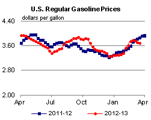
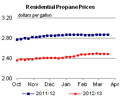

Released: March 20, 2013
Next Release: March 27, 2013
Total U.S. crude oil imports continue to decline in 2012 but regional differences persist
At 8.5 million barrels per day (bbl/d), U.S. crude oil imports in 2012 were the lowest for any year since 1997, as growing domestic crude oil production drove a 444,000 bbl/d (5.0 percent) decline from the 2011 import level. With refinery runs remaining relatively high, U.S. refiners are running an increasing amount of domestically produced crude oil. However, the crude oil import reduction trend is not geographically uniform. Most of the decline in imported crude oil occurred in the Gulf Coast and East Coast regions, while Midwest imports rose (Figure 1).
{kind=link}
Since peaking in 2005 at 10.1 million bbl/d, U.S. crude oil imports fell in six of the subsequent seven years, amounting to a total decline of more than 1.6 million bbl/d (16.1 percent). Over the same period, net crude runs at U.S. refineries fell only 200,000 bbl/d (1.4 percent). As a result, imports represented 57 percent of crude oil run in U.S. refineries in 2012, down from 67 percent in 2005.
Reductions in the use of imported crude oil were most apparent along the Gulf Coast, home to about half of the nation's refining capacity. Imported crude runs in this region were 4.5 million bbl/d in 2012, representing 58 percent of total crude runs, down from 80 percent in 2005. EIA's weekly data indicate that that trend is continuing and accelerating in 2013. Average Gulf Coast crude oil imports for the four weeks ending March 1 dropped below 3.4 million bbl/d, the lowest four-week average since 1992.
From 2005 to 2012, East Coast refinery runs of imported crude decreased 735,000 bbl/d (46 percent). That decrease was almost matched by a 685,000 bbl/d decrease in overall East Coast crude runs. Recently, the large price differentials between landlocked crudes with growing production, such as Bakken, and global seaborne crudes that are linked to the price of Brent have encouraged refiners to bring more domestically produced crude into the region via rail. In 2012, 92 percent of crude oil run in East Coast refineries was imported, down from 99 percent in 2005.
Opposite this trend, the Midwest has been importing significantly more crude oil since 2005. In 2012, runs of imported crude oil reached 1.7 million bbl/d, an increase of 205,000 bbl/d (14 percent). In 2005, almost 34 percent of imported crude oil run in the Midwest was shipped to the Midwest via another region, most commonly by pipeline from the Gulf Coast; however, by 2012, nearly all imported crude processed in the Midwest was imported directly from Canada. While total U.S. crude imports have been decreasing, imports from Canada have gone up 775,000 bbl/d since 2005. The United States imported 2.4 million bbl/d of Canadian crude oil in 2012, or about 28 percent of total U.S. crude imports.
{kind=link}
In addition to crude from Canada, crude imports from Colombia, Kuwait, and Brazil also increased; however, imports from other major suppliers declined since 2005 (Figure 2). U.S. imports from Nigeria have fallen 671,000 bbl/d (62 percent) since reaching almost 1.1 million bbl/d in 2005. This decline in imports of Nigerian crude has been split fairly evenly between the Gulf Coast and East Coast. Much of the growth in domestic production has been light low-sulfur crude oil, a suitable and more economic substitute for the Brent-price-linked Nigerian grades, which have lost competitiveness in U.S. import markets. The United States has also reduced imports of heavy high-sulfur crude from Mexico and Venezuela and light low-sulfur crude from Angola and the United Kingdom.
Gasoline and diesel fuel prices both decrease for a 3rd week
The U.S. average retail price of regular gasoline decreased one cent to $3.70 per gallon, down 17 cents from last year at this time. Prices declined in all regions of the nation except the Midwest, where the price is $3.65 per gallon, up three cents from last week, and the Rocky Mountain region, where the price is unchanged at $3.47 per gallon. The West Coast and East Coast prices both dropped four cents, to $4.01 per gallon and $3.69 per gallon, respectively. Rounding out the regions, the Gulf Coast price declined two cents to $3.52 per gallon.
The national average diesel fuel price decreased four cents for the second consecutive week, to $4.05 per gallon, 10 cents lower than last year at this time. Prices decreased in all regions of the nation, with the largest decrease on the West Coast, where the price decreased seven cents to $4.16 per gallon. The Gulf Coast and Rocky Mountain prices are now both under the $4 per gallon mark, falling five and four cents from last week, respectively, to $3.99 per gallon and $3.97 per gallon. The East Coast price declined four cents to $4.08 per gallon, and the Midwest price is $4.02 per gallon, dropping three cents from last week.
Propane inventories decline
U.S. propane stocks fell 1.2 million barrels to end at 41.8 million barrels last week, and are 1.0 million barrels (2.3 percent) lower than the same period a year ago. Gulf Coast inventories dropped by 1.2 million barrels, while East Coast, Midwest, and Rocky Mountain/West Coast inventories changed only slightly. Propylene non-fuel-use inventories represented 8.0 percent of total propane inventories.
Residential heating oil and propane prices decrease
Residential heating oil prices decreased during the period ending March 18, 2013. The average residential heating oil price fell by 3 cents to $4.01 per gallon, 10 cents per gallon lower than the same time last year. Wholesale heating oil prices decreased by 4 cents to almost $3.10 per gallon, 29 cents per gallon less than last year at this time.
The average residential propane price decreased by nearly a penny, to $2.48 per gallon, almost 39 cents per gallon lower than the same period last year. Wholesale propane prices increased by nearly 4 cents to $1.01 per gallon for the week ending March 18, 2013, 23 cents per gallon lower than the March 19, 2012 price.
This is the last data collection for the 2012-2013 SHOPP season. Data collection will resume on October 7, 2013 for publication on Wednesday, October 9, 2013.
Text from the previous editions of This Week In Petroleum is accessible through a link at the top right-hand corner of this page.
|  |  |
||||||
 |
 | ||||||
| Retail Data | Change From Last | Retail Data | Change From Last | ||||
| 03/18/13 | Week | Year | 03/18/13 | Week | Year | ||
| Gasoline | 3.696 | Heating Oil | 4.009 | ||||
| Diesel Fuel | 4.047 | Propane | 2.484 | ||||
|
|||||||||||||||||||||||||||
| *Note: Crude Oil Price in Dollars per Barrel. | |||||||||||||||||||||||||||
| Stocks Data | Change From Last | Stocks Data | Change From Last | ||||
| 03/15/13 | Week | Year | 03/15/13 | Week | Year | ||
| Crude Oil | 382.7 | Distillate | 119.8 | ||||
| Gasoline | 222.8 | Propane | 41.759 | ||||